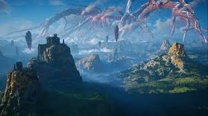

Svartalfheim
Hogar de los elfos oscuros o enanos:
Los habitantes de Svartálfheim son los Dökkálfar (elfos oscuros) o los Dvergar (enanos). En algunas tradiciones, los términos se usan indistintamente. Los enanos son conocidos por su gran habilidad como artesanos, herreros y fabricantes de objetos mágicos.
Ubicación en los Nueve Mundos:
Svartálfheim está ubicado en lo profundo de la tierra, en un mundo subterráneo oscuro y misterioso. Se encuentra lejos de la luz y los cielos brillantes de otros mundos, como Alfheim (hogar de los elfos de la luz)..
Paisaje y entorno:
El reino es oscuro y lleno de túneles, cavernas y minas. Su ambiente sombrío simboliza el vínculo con la tierra y los minerales, así como la creatividad que surge de las profundidades.
Los enanos y su papel en la mitología:
Los enanos son los creadores de muchos objetos mágicos importantes en los mitos nórdicos, como: Mjölnir, el martillo de Thor. Gungnir, la lanza de Odín. Draupnir, un anillo mágico que se multiplica. Skidbladnir, un barco mágico de Freyr. El cabello dorado de Sif, forjado para reemplazar el cabello que Loki cortó. A menudo trabajan bajo encargo de los dioses, quienes valoran su artesanía única.
Relación con los dioses y los humanos:
Aunque los enanos no son deidades, tienen un papel fundamental en los mitos debido a sus creaciones mágicas, que son utilizadas por los dioses Æsir y Vanir. Son conocidos por ser reservados, astutos y a veces desconfiados de los dioses y los humanos.
Los Dökkálfar (elfos oscuros):
En algunas interpretaciones, los elfos oscuros son entidades distintas de los enanos, descritos como seres sombríos y mágicos que viven en Svartálfheim. Los Dökkálfar están asociados con poderes misteriosos, magia y una conexión más etérea con la oscuridad.
Simbolismo
Creatividad en la oscuridad: Un mundo que destaca la capacidad de producir belleza, magia y utilidad desde las profundidades más oscuras. Forja y transformación: Representa la habilidad de moldear los recursos crudos de la tierra en herramientas y artefactos de valor inestimable. Oscuridad y misterio: Encierra el simbolismo de lo oculto y el potencial de lo que no se ve fácilmente.